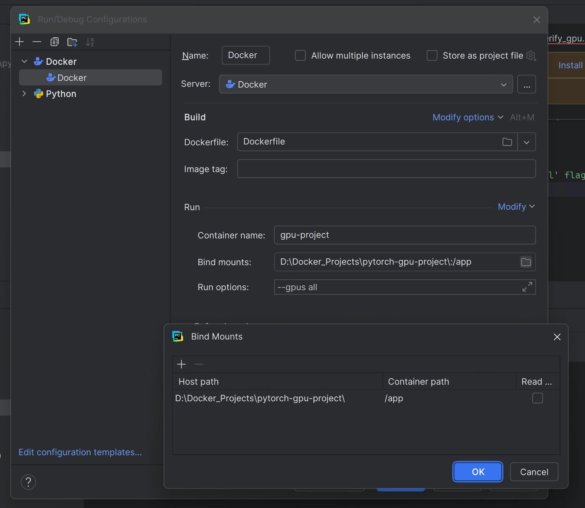

Abstract
This document provides a comprehensive, step-by-step guide for configuring a high-performance Windows 11 PC for advanced machine learning and data science projects. The instructions are divided into two key parts. The first part details the setup of a secure remote desktop solution using RustDesk, enabling full control of the host machine from a remote client, such as a MacBook. The second part provides a thorough walkthrough of establishing a reproducible, GPU-accelerated development environment using Docker. It covers the foundational concepts and installation of the Windows Subsystem for Linux (WSL2), the configuration of Docker Desktop to utilize an NVIDIA GPU, and the best practices for building and managing containerized Linux environments with PyCharm. The end result is a flexible, powerful, and portable workstation, optimized for demanding computational workflows.
Introduction
Welcome! This guide is your personal cheat sheet for transforming a powerful, NVIDIA-equipped Windows 11 PC into a professional-grade machine learning workstation. Whether you're working directly at your desk or connecting remotely from a MacBook, these instructions will ensure your setup is robust, efficient, and easy to manage.
We will tackle this in two main parts:
- Remote Desktop Setup: First, we'll configure RustDesk to give you secure and reliable "unattended access" to your Windows PC. This means you can be anywhere with your MacBook and have full control over your powerful hardware.
- Docker Container Environment: Next, we'll dive into creating the perfect development environment using Docker. Using beginner-friendly analogies and clear instructions, this guide will demystify WSL2, show you how to give Docker full access to your GPU, and walk you through creating a clean, reproducible Linux environment for PyTorch, all managed seamlessly through PyCharm.
By the end of this guide, you will have a complete, professional setup that solves the "it works on my machine" problem forever, allowing you to focus on what really matters: building amazing things.
Remote Desktop Setup
RuskDesk
RuskDesk Introduction
We will install and configure RustDesk on two computers:
- The Host: Your Windows 11 desktop. This is the computer you want to control. We'll set a permanent password on it so you can connect without anyone needing to be there to approve the connection.
- The Client: Your MacBook. This is the computer you will use to control the Windows desktop.
Part 1: Setting up Your Windows 11 PC (The Host)
This is the most important part. We need to install RustDesk and configure it so it's always ready to accept your connection.
Step 1: Download RustDesk on Windows
- On your Windows 11 desktop, open a web browser (like Chrome, Edge, or Firefox).
- Go to the official RustDesk website: https://rustdesk.com/
- The website should automatically detect you're on Windows. Click the prominent Download button. It will download a file named something like
rustdesk-1.2.x-x86_64.exe.
Step 2: Install RustDesk for Unattended Access
For unattended access to work reliably, you must install RustDesk, not just run the downloaded file. The portable version won't start automatically with your PC.
- Find the downloaded file (usually in your Downloads folder) and double-click to run it.
- The RustDesk window will appear. On the left side, under your ID, you will see a message: "For better performance, please install RustDesk."
- Click the Install button.
- The Windows User Account Control (UAC) will pop up asking for permission. Click Yes.
- The installer will run quickly. Once it's finished, RustDesk will be installed as a service, meaning it will automatically start every time your PC boots up.
Step 3: Set a Permanent Password for Unattended Access
This is the key to connecting without needing someone to click "Accept" on the Windows PC.
- In the RustDesk window, look for your ID on the left. Next to it, you'll see a three-dot menu (...).
- Click the menu and select Security.
- The Security Settings window will open. Click on Unlock Security Settings.
- You will see two options for unattended access. For simplicity and the best result, choose the first one: "Set permanent password for unattended access"
- Click the Set permanent password... button.
- A box will appear. Enter a strong, unique password. This password is the key to your computer, so make it secure (e.g., a mix of upper/lowercase letters, numbers, and symbols).
- WRITE THIS PASSWORD DOWN! You will need it on your MacBook.
- Click OK.
Step 4: Get Your RustDesk ID
- Look at the main RustDesk window again. On the left side, under "Your Desk," you will see a number labeled ID.
- This is the unique address for your Windows PC. Write this ID down or take a picture of it. You will need both the ID and the password you just created to connect from your MacBook.
Step 5: Check Windows Power & Sleep Settings (Important!)
For unattended access to work, your Windows PC must be on and connected to the internet. It cannot be asleep or hibernating.
- Click the Start Menu and type
Power plan. - Click on
Choose a power plan. - Next to your selected plan, click
Change plan settings. - Set "Put the computer to sleep" to Never.
- Click Save changes.
Part 2: Setting up Your MacBook (The Client)
Step 1: Download and Install RustDesk on macOS
- On your MacBook, open the Safari browser and go to the RustDesk website: https://rustdesk.com/
- Click the Download button. It will download a
.dmgfile. - Open the downloaded
.dmgfile. A window will appear showing the RustDesk icon and an Applications folder shortcut. - Drag the RustDesk icon and drop it into the Applications folder. This installs the application.
- You can now eject the RustDesk disk image from your desktop.
Step 2: Grant Necessary Permissions on macOS
macOS has strict security. You must manually give RustDesk permission to control your computer and see your screen. This step is critical.
- Open RustDesk from your Applications folder.
- You will likely see a yellow or red warning banner inside the app about permissions. Click on the link in the banner, or follow these manual steps:
- Go to the Apple Menu > System Settings.
- In the sidebar, click on Privacy & Security.
- Find and click on Accessibility. Click the + button, navigate to your Applications folder, select RustDesk, and click Open. Make sure the toggle next to RustDesk is turned on (blue).
- Now, go back to the Privacy & Security settings and find Screen & System Audio Recording. Click it, and again, make sure the toggle next to RustDesk is turned on.
- RustDesk might ask you to quit and reopen to apply the settings. Do so.
Part 3: Connecting from Your MacBook to Your Windows PC
This is the final step!
- Open RustDesk on your MacBook.
- Look for the main input field at the top of the window that says "Enter Remote ID".
- Carefully type the ID of your Windows 11 PC that you wrote down earlier.
- Click the Connect button. A new window will appear, prompting you for a password.
- Enter the permanent password you set on your Windows PC in Part 1.
- You can check the box "Store password" if you don't want to type it in every time.
- Click OK.
Success! A window should now open on your MacBook showing the desktop of your Windows 11 PC. You can move your mouse and type on your keyboard to control it as if you were sitting right in front of it.
Important Security Considerations
- Strong Password: Your unattended access password is the only thing protecting your PC from being controlled by anyone who knows your ID. Make it very strong and do not reuse it anywhere else.
- Keep Software Updated: Regularly check for updates for RustDesk on both computers to ensure you have the latest security patches.
- Do Not Share Your ID: Treat your RustDesk ID as private information.
Docker Container Environment
Docker Introduction
You can think of Docker as a massively more powerful, complete, and portable version of a venv. A venv creates a virtual environment for your Python packages. A Docker container creates a virtual environment for an entire operating system.
The "Room vs. House" Analogy
This is the easiest way to understand the difference:
- A venv is like organizing a single room in your house. Imagine your Windows 11 PC is a big house. You decide to make one room your "Project Library." You create a venv. This is like putting up special shelves in that room. On these shelves, you can only place specific versions of your Python books (numpy, pandas, pytorch). The books in this room won't get mixed up with books in other rooms. However, the room still depends on the rest of the house. It uses the house's main electricity (your OS kernel), plumbing (system libraries like ffmpeg), and foundation (your hardware). You can't just pick up this "room" and move it to a friend's plot of land (a Mac or a Linux server) and expect it to work.
- Docker is like building a complete, pre-fabricated, portable tiny house. A Docker container is a whole, self-contained house. It comes with its own walls (the Linux OS file system), its own plumbing (apt-get libraries like libgl1), its own electrical wiring (the specific Python version), and its own pre-stocked bookshelves (pip packages). This entire tiny house is self-sufficient. Because it's a standard container, you can pick it up and place it on any plot of land (any computer running Docker - Windows, Mac, or Linux) and it will work exactly the same way everywhere. It doesn't care what the main house looks like because it has everything it needs inside.
Verify Your NVIDIA Driver
For Docker to access your Graphics Card, you need a recent NVIDIA driver installed on your Windows host.
- Right-click your desktop and open the NVIDIA Control Panel.
- In the bottom-left, click "System Information".
- Under the "Details" tab, check your "Driver version". Anything from version 525.xx or newer is great. Your driver is likely up-to-date, but it's good to confirm.
WSL2
WSL2 Introduction
- Imagine you speak only English (this is your Windows OS) but you need to work with someone who speaks only Japanese (this is a Linux program, like a Docker container).
- You could try to learn Japanese yourself (very hard), or you could hire a world-class, simultaneous translator who lives in your house and makes communication seamless.
- WSL2 is that expert translator. It allows your English-speaking Windows to perfectly understand and run Japanese-speaking Linux programs at native speed.
1. What is WSL2?
- WSL stands for Windows Subsystem for Linux.
- It's an official feature from Microsoft, built directly into Windows 10 and 11. Its purpose is to let you run a real, full Linux environment directly on your Windows machine without needing to dual-boot or run a slow, clunky traditional virtual machine.
- WSL2 is the second, much more powerful version of this feature.
2. How Does it Work? (The Magic Inside)
- This is the coolest part.
- A traditional virtual machine (like VirtualBox) has to emulate an entire computer in software. This is like the translator having to build a fake Japanese office inside your English house—it's slow, separate, and uses a lot of resources.
- WSL2 works differently. Microsoft has integrated a real, complete Linux kernel directly into Windows. This isn't an emulation or a fake; it's the genuine article.
- Think of it this way: Windows and this new Linux kernel are running side-by-side as close partners. When a Linux command needs to be executed, Windows doesn't try to figure it out; it hands it directly to its expert Linux partner, who runs it at full speed and hands the result back. This deep integration is what makes it so fast and powerful.
3. Why Do We Need It?
For decades, the world of software development, especially for servers, the cloud, and data science, has been dominated by Linux. The best tools are often built for Linux first. This created a problem for developers on Windows. We need WSL2 for three main reasons:
- Access to Linux Tools: It gives you direct access to the massive ecosystem of Linux command-line tools (apt-get, grep, ssh, etc.) that are standard in development.
- Performance: Because it uses a real Linux kernel, it's incredibly fast, especially for operations that involve lots of files (like running git commands or building software).
- Compatibility: Many programming scripts and applications are written with the assumption that they will be run on Linux. WSL2 provides the perfect environment for them to run on Windows without any changes.
4. How is it Related to Docker? (The Crucial Connection)
This is the most important part for your project.
- The Problem: Docker was born on Linux. A Linux-based Docker container is fundamentally just an isolated process running on a Linux kernel. The Windows kernel is completely different and cannot run these processes directly.
- The Solution: Docker Desktop on Windows doesn't try to reinvent the wheel. It uses WSL2 as its engine or backend.
5. How to Set it Up as a Beginner? (The Easy Way)
Microsoft has made this incredibly simple on modern Windows 11. If you already see VERSION 2 when you run `wsl -l -v`, you have already done this! But for completeness, here is the process from scratch. It's essentially a single command.
- Open PowerShell as Administrator. (Click the Start Menu, Type "PowerShell", Right-click on "Windows PowerShell" and select "Run as administrator").
- Run the Magic Command. In the blue Administrator PowerShell window, type the following command and press Enter:
wsl --installAfter the command finishes, it will tell you to restart your PC. Do this. After rebooting, a Linux terminal window will pop up automatically to finish the Ubuntu installation. It will ask you to create a username and a password. This is only for your Linux environment; it has nothing to do with your Windows login.
Verify WSL2
- Open PowerShell or Windows Terminal.
- Run the command:
wsl -l -v - You should see an output with a distribution (like docker-desktop-data or ubuntu) that has STATE as Running and VERSION as 2. This confirms WSL2 is active.
Docker Desktop
Check and Move Your Docker Data Location
You want all Docker data on your 8TB HDD (let's assume it's the D: drive). If Docker is currently storing images and containers on your C: drive, it will fill up fast.
How to Move Docker's Data to your D: Drive:
- Open Docker Desktop. Click the Settings gear icon in the top-right.
- Go to the "Resources" tab, and then "Advanced".
- Look for the "Disk image location" field. If it's on your C: drive, we must move it.
- Click the "Browse" button next to the disk image location.
- Navigate to your 8TB drive. I recommend creating a dedicated folder, for example: `D:\DockerData`. Select this new folder.
- Click the "Apply & restart" button.
- Docker will automatically move all its existing data. This might take a few minutes.
Git Clone Docker Template
Before starting the configuration, you need to download the project files to your local computer. This is called "Cloning".
Run the following command in your terminal (e.g., PowerShell or Git Bash) inside the folder where you want your projects to live (like D:\Projects\):
git clone https://github.com/Xarnder/docker-template.gitPyCharm: Interpreter vs. Run Configuration
Before we proceed, it is important to understand the difference between these two settings in PyCharm. It can be confusing because they both seem to "control" Docker.
1. Python Interpreter (The Engine)
File > Settings > Project > Python Interpreter
Think of this as the engine under the hood of your car. It is a global setting for the entire project. By setting the interpreter to "Docker", you are telling PyCharm: "Do not use the Python installed on Windows. Use the Python installed inside the Docker Container." This allows PyCharm to index the libraries inside the container so that features like auto-complete and syntax highlighting work correctly.
2. Run Configuration (The Dashboard)
Edit Configurations (Top Right Dropdown)
Think of this as the dashboard settings for a specific road trip. While the engine (Interpreter) stays the same, you might want to drive differently today. The Run Configuration controls how a specific script is launched. This is where you tell Docker to turn on the GPU, mount specific folders, or clean up after itself.
Setting the PyCharm Interpreter
You must set your PyCharm Interpreter to the Docker container so PyCharm knows where to find your libraries.
- Open your project in PyCharm.
- Go to File > Settings > Project > Python Interpreter.
- Click the Add Interpreter link (or the gear icon) and select On Docker...
- In the dialog that appears, select "Docker" as the server.
- Select Build from Dockerfile (this ensures the environment matches your code exactly).
- Click OK. PyCharm will take a few minutes to build the image and index the files.
Setting Up Run Configuration (Docker Config)
Now we need to configure the specific run options to ensure the container has access to your hardware. You do this by editing the configuration in the top-right of the PyCharm window.
Docker Config Details:
- Name: Docker (or any name you prefer)
- Dockerfile: Dockerfile
- Run options: You must copy and paste these exact flags into the "Run options" field (found under Modify Options):
--gpus all --ipc=host --rmWhat do these flags mean?
--gpus all: This is critical. It punches a hole through the container walls to let the Linux system see and use your physical NVIDIA GPU. Without this, PyTorch will not be able to use CUDA.--ipc=host: This stands for "Inter-Process Communication". Deep learning dataloaders use shared memory to speed up data transfer. The default Docker shared memory is too small, which causes PyTorch to crash unexpectedly. This flag allows the container to use the host's shared memory space, fixing that crash.--rm: This stands for "Remove". It tells Docker to automatically delete the container as soon as the script finishes running. This keeps your system clean and prevents hundreds of "zombie" stopped containers from cluttering up your hard drive.
Don't forget to also set up your Bind Mounts (Volumes) in this same menu, which we discuss in the "Managing Project Data" section.
Dockerfile or Requirements.txt
The Dockerfile sets up the Operating System, and the requirements.txt installs Python libraries inside that operating system. Let's use a clear analogy to explain this.
The "Smartphone and Apps" Analogy
Think of your Docker container as a brand new smartphone that you are setting up from scratch.
1. The Dockerfile = Setting Up the Smartphone Itself
The Dockerfile is the set of instructions for preparing the phone's core operating system (like iOS or Android).
FROM pytorch/pytorch:...: This is like choosing your phone model. You've chosen an "Ubuntu Phone, PyTorch Edition." It already has the basic OS (Ubuntu), the main camera hardware driver (CUDA), and the primary Camera App (PyTorch) pre-installed by the manufacturer.RUN apt-get install -y ffmpeg: This is like going into the phone's system settings and installing a system-wide service or utility. ffmpeg is not a powerful, standalone program written in languages like C. It's like a core video processing service that any app on the phone can use. You are installing it using Ubuntu's "system installer," which is called apt-get.
2. The requirements.txt = Installing Apps from the App Store
The requirements.txt file is your list of apps to download from the "Python App Store" (which is called PyPI). These apps run on top of the phone's operating system.
RUN pip install -r requirements.txt: This command tells the phone, "Open the App Store (pip) and install all the apps on this list (requirements.txt)."numpy, pandas, opencv-python: These are the "apps" you want to install. They are written in or for Python and are managed by Python's package installer, pip.
Why ffmpeg Must Go in the Dockerfile
Now for the crucial connection. Why can't we just pip install ffmpeg? Because many Python libraries are just clever "wrappers" or "controllers" for more powerful system programs. Imagine you install a Python library called torchaudio (which comes with PyTorch). The torchaudio "app" doesn't know how to process an MP3 file from scratch. Instead, when your Python code tells torchaudio to load an MP3, torchaudio simply turns to the operating system and says: "Hey, Operating System! I have this MP3 file. Can you please use your built-in service to process it for me and give me back the raw audio data?"
- If The OS says "Sure!", runs ffmpeg, and gives the data back to torchaudio. Everything works.
- If The OS says, "Sorry, I don't have a service called ffmpeg." The torchaudio app immediately crashes with an error.
The Python library (torchaudio) depends on the system program (ffmpeg) being present.
Using Docker
You Need to Rebuild From Scratch (The Real "Rebuild")
This is the scenario you asked about. You need to do this when you have changed the "blueprint" of your environment.
When to do a full rebuild:
- You edited your Dockerfile (e.g., added a new
RUN apt-get installcommand). - You edited your requirements.txt (e.g., added a new library like scikit-learn).
A simple restart won't work here because your existing container was built from the old blueprint. You need to build a new image and then create a new container from it. Here is the best and easiest way to do this entirely within PyCharm:
- Start Docker Desktop and open your project in PyCharm.
- Open the "Services" Tool Window (View -> Tool Windows -> Services).
- Find and Rebuild Your Image. In the Services window, expand the Docker connection, then expand the Images section. Find your image, which will be named `pytorch-gpu-project:latest`.
- Right-click on your image and select Build Image...
- A dialog box will pop up. It will already be correctly configured. Just click the Build button at the bottom.
- Watch the Build Process. The "Build Log" tab will open, showing all the steps from your Dockerfile being executed. This overwrites the old image.
- Run Your Code. Once the build is finished, just run your Python script as normal. PyCharm will automatically delete the old, outdated container and create a brand new container based on your newly rebuilt image.
The "Nuke it From Orbit" Method (For a truly fresh start)
Sometimes things can get weird with Docker's caching, or you just want to be 100% sure you're starting from a completely clean slate. This method guarantees a fresh build.
- Open the Services window in PyCharm.
- Stop and Remove the Container: Expand Containers, find your project's container, right-click on it -> Stop, then right-click again -> Delete... and confirm.
- Remove the Image: Expand Images, find your `pytorch-gpu-project:latest` image, right-click on it -> Delete Image... and confirm.
- Run your Python script. Now, with no container and no image, just click the green "Run" arrow. PyCharm will see that nothing exists and will be forced to run a full, clean build from scratch.
Getting into Your Docker Container
Method 1: The Easy PyCharm Way (Recommended)
PyCharm is aware of your running containers and gives you a one-click way to open a terminal inside them.
- Make Sure Your Container is Running. The easiest way to do this is to simply run any Python script from your project. The container will stay running for a while afterwards.
- Open the "Services" Tool Window.
- Find Your Running Container. Expand Docker -> Containers. You will see your project's container with a green "play" icon.
- Right-click on your running container and select Exec....
- A small dialog box will pop up. In the "Command" field, it will likely default to `/bin/bash`. This is what you want. Click the Create button.
- You're In! A new "Terminal" tab will open at the bottom of PyCharm with a prompt like `root@a1b2c3d4e5f6:/app#`. The `:/app` part is key, showing you're in the right directory.
Method 2: The Docker Command-Line Way
This method uses the standard Docker command and can be run from any terminal on your PC (PowerShell, Windows Terminal, or PyCharm's built-in terminal).
- Find Your Container's Name or ID. Open a terminal and type:
docker ps. You can use either the CONTAINER ID or the NAMES. - Execute the Command to Get Inside. The format is `docker exec -it
`. So, you would type:
docker exec -it quirky_einstein /bin/bashManaging Project Data with Docker Volumes (The Magic Portal)
We have successfully created a perfect, self-contained Linux environment for our code. But this raises a critical question: Where do we put our data? What about our massive datasets, Jupyter notebooks, trained model checkpoints, and final output graphs? We absolutely do not want to put them inside the Docker image itself.
What Happens If We Don't Use a Volume? (The Locked Room Problem)
Imagine your Docker container is a perfectly clean, secure, locked room.
- Copying Files In: When you
COPY . .in your Dockerfile, you are making a one-time copy of your Python scripts into this locked room when it's built. - Working Inside: Your Python script runs inside this room. It can create new files—let's say it trains a model and saves it as
model.pth. This new file now exists only inside the locked room. - The Problem: When you are done, you might stop and remove the container (you "tear down" the room). Everything created inside that room is permanently deleted. Your
model.pthis gone forever. There is no way to get it back.
Without a volume, your container is a temporary black box. Data can't easily get in after it's been built, and anything created inside is destroyed along with the container.
What is a Docker Volume? (The Solution: A Magic Portal)
A Docker Volume—specifically a "bind mount" which we will use—is like opening a magic portal between a folder on your Windows PC and a folder inside your running container. It's a live, two-way link.
- If you add a file to the folder on your Windows D: drive, it instantly appears inside the container.
- If your Python script inside the container saves a file to the linked folder, it instantly appears on your Windows D: drive.
- This connection is persistent. The data lives safely on your Windows hard drive. You can delete, rebuild, and recreate your container a hundred times, and your data will remain untouched and will immediately reconnect to the new container.
This is the standard, professional way to manage data with Docker. It perfectly separates your temporary, disposable environment (the container) from your permanent, precious data (your files on the host machine).
How to Set it Up in PyCharm (Step-by-Step)
Step 1: Create Your Data Folders on Windows
First, let's create a clean folder structure on your host machine. Navigate to your main project folder, `D:\pytorch-gpu-project`, and create a new folder named `data`. Inside the `data` folder, create a few subfolders like `input`, `output`, and `notebooks`.
Your project structure on Windows should now look like this:
D:\pytorch-gpu-project/
├── data/
│ ├── input/
│ ├── output/
│ └── notebooks/
├── src/
│ └── verify_gpu.py
├── Dockerfile
└── requirements.txt
Step 2: Add the Bind Mount in PyCharm
When you are setting up the Docker interpreter (as shown in the "Setting Up Container" section), in the "Modify options" dialog, add a bind mount:
- Host path: `D:\pytorch-gpu-project\data`
- Container path: `/app/data`
Step 3: Verify the Connection
Create a file named `test.txt` inside `D:\pytorch-gpu-project\data\input` on Windows and write "Hello from Windows!" in it. Then, get a terminal inside your running container. Navigate to `/app/data/input` (`cd data/input`) and list the files (`ls`). You should see `test.txt`. Read its contents (`cat test.txt`), and it should print "Hello from Windows!".
Backing Up Your Project with Git and GitHub
Now that our development environment is set up, the final step is to create a secure backup and a version history of our work. We will use Git and GitHub for this.
The Big Idea: We are backing up our project's blueprints (Dockerfile, .py scripts, requirements.txt), not the fully assembled "house" (the multi-gigabyte Docker image). This allows anyone with these small blueprint files to perfectly recreate the entire environment from scratch.
Step 1: Create the "Do Not Pack" List (.gitignore)
Before we save anything, we must tell Git which files and folders to ignore. We don't want to back up temporary cache files, PyCharm's local settings, or large datasets. This is done with a special file called `.gitignore`.
- In PyCharm, right-click on the root folder of your project in the left-hand Project view.
- Select New -> File.
- Name the file exactly .gitignore (the dot at the beginning is crucial).
- Copy and paste the following text into the file. This is a robust template for Python and Docker projects.
# Python bytecode and cache
__pycache__/
*.pyc
# PyCharm specific files (local settings)
.idea/
# Operating System generated files
.DS_Store
Thumbs.db
# Log files
*.log
# Datasets and large output files.
# We back up the CODE, not the DATA.
# The asterisk (*) is a wildcard meaning "everything inside this folder".
data/input/*
data/output/*
Step 2: Create an Empty Repository on GitHub
Next, we need to create the empty project "safety deposit box" in the cloud.
- Navigate to GitHub.com in your web browser and log in.
- In the top-right corner, click the + icon and select "New repository".
- Repository name: Give your project a name (e.g., `pytorch-gpu-docker-template`).
- Public / Private: Choose if you want the code to be visible to others.
- CRITICAL STEP: Leave all the initialization checkboxes unchecked. Do NOT add a README, .gitignore, or license from the GitHub website, as we have already created these files on our computer.
- Click the green "Create repository" button.
Step 3: Connect and Push Your Project from PyCharm
GitHub will now display a page with instructions. We will use the "...or push an existing repository from the command line" section. In PyCharm, open the Terminal tab at the bottom of the window and type the following commands one by one, pressing Enter after each.
# 1. Initialize Git in your project folder.
git init
# 2. Stage all your files (except those in .gitignore) for saving.
git add .
# 3. Save a snapshot of your files with a descriptive message.
git commit -m "Initial commit: Setup Docker environment and project structure"
# 4. Rename the primary branch to 'main' (the modern standard).
git branch -M main
# 5. Tell Git the address of your GitHub repository.
# **COPY THIS FULL LINE FROM YOUR GITHUB PAGE. IT IS UNIQUE TO YOUR PROJECT!**
git remote add origin https://github.com/YourUsername/YourRepositoryName.git
# 6. Push (upload) your saved files to GitHub.
git push -u origin main
After the last command completes, refresh your GitHub repository page in your browser. All of your project's "blueprint" files will now be safely stored in the cloud.
Using Your Template for a New Project
Your docker-template repository is now a perfect starting point for any new project. The goal is to copy this template, but then connect it to a brand new GitHub repository for your new project. The Analogy: The House Blueprint. Think of your template on GitHub as the master blueprint for a house. You don't want to draw on the master blueprint. Instead, you take a copy of it to a new plot of land (your new project folder), and you file this new project under a new address (your new GitHub repository URL).
Step 1: Create the New "Home" on GitHub
First, create a new, completely empty repository on GitHub for your new project. Give it a name specific to your new project (e.g., `my-new-audio-analysis-project`). Crucially, do NOT initialize it with a README, .gitignore, or license. It must be completely empty. After creating it, copy its URL.
Step 2: Clone the Template to Your Local Computer
Now, go to your local machine. We will git clone your template into a new folder named after your new project.
# Format: git clone
git clone https://github.com/Xarnder/docker-template.git my-new-audio-analysis-project
Step 3: Change the Remote Address (The Most Important Step)
Right now, the new local folder is still "wired" to point back to your original template. We need to rewire it to point to your new repository.
# Navigate into your newly created project folder
cd my-new-audio-analysis-project
# Verify the current remote address
git remote -v
# Remove the old connection
git remote remove origin
# Add the new connection (Paste the URL of your NEW repository here)
git remote add origin https://github.com/YourUsername/my-new-audio-analysis-project.git
# Verify the new remote address again
git remote -v
Step 4: Push to the New Repository
Now you can push the code from your local machine up to its new home on GitHub.
git push -u origin mainThe "Do Not Pack" List (.gitignore)
Think of your Git repository as a suitcase you are packing for a trip (to GitHub). Your .gitignore file is the "Do Not Pack" list you stick to the lid of the suitcase. Before Git packs anything into the suitcase, it first reads this list. If it sees a file or folder on the list, it will leave it on the floor and will not pack it.
CRITICAL: What If You Already Uploaded It by Accident?
This is a very common scenario. If you have already committed and pushed a folder (e.g., `image_output`) to GitHub, simply adding it to .gitignore is not enough. Git is already "tracking" those files, so it will continue to watch them for changes. You need to tell Git two things:
- "Please stop tracking this folder."
- "Don't delete the folder from my computer, just from your tracking list."
Here is the simple, safe command sequence to fix this.
# 1. First, make sure your .gitignore is updated with the folder to ignore.
# (e.g., it contains the line "image_output/")
# 2. Run this command to remove the folder from Git's tracking (but not from your disk):
# --cached is the most important part. It leaves the files untouched on your hard drive.
git rm -r --cached image_output
# 3. Now, commit this change. You have told Git to officially stop tracking the folder.
git commit -m "Stop tracking image_output folder"
# 4. Finally, push this update to GitHub.
git push
After this, the `image_output` folder will be removed from your GitHub repository, but it will still be safe on your local computer. And because it's now in your .gitignore file, Git will never try to upload it again.